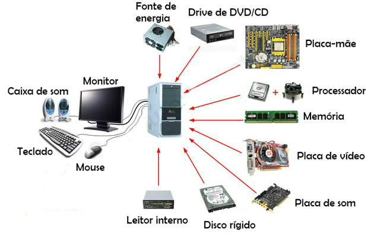
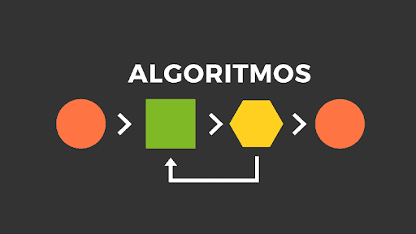
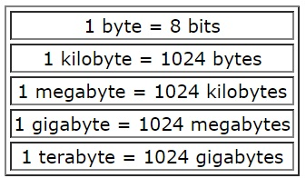
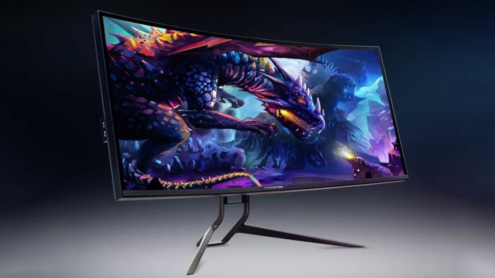
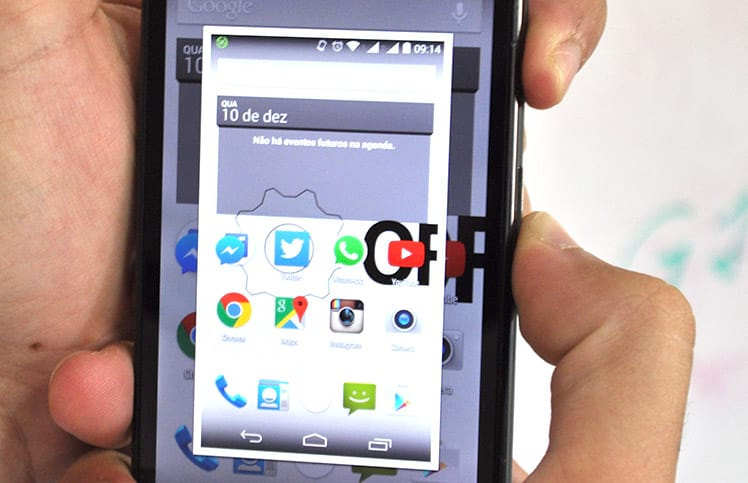
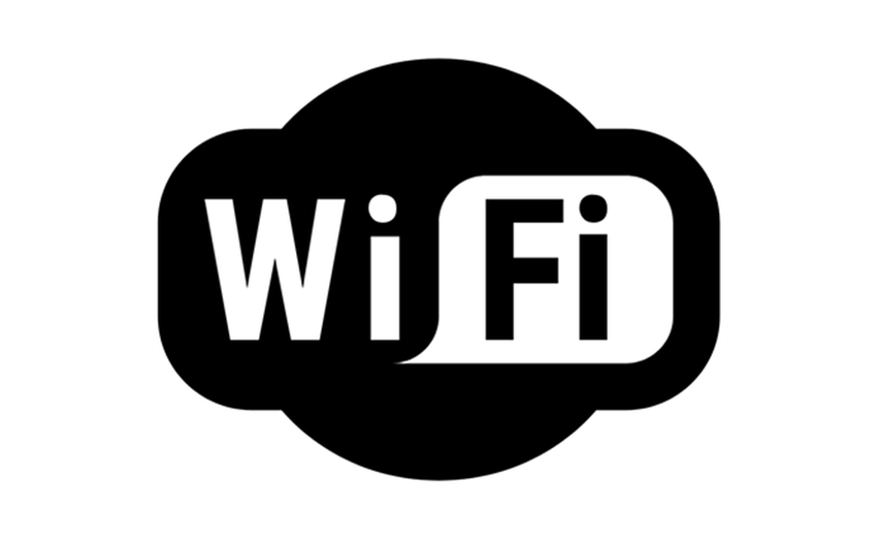

O que é o Hardware?
Hardware são as partes que podemos ver de um computador, ou seja, todos os componentes da sua estrutura física como o monitor, o teclado, o gabinete e o mouse.

O que é software?
São os programas que nos permitem realizar atividades específicas num computador. Por exemplo, os sistemas operacionais, aplicativos, navegadores web, jogos entre outros.

O que significa CPU?
CPU é a sigla para Central Process Unit, ou Unidade Central de Processamento. Ele é o principal item de hardware do computador, que também é conhecido como processador.

O que são databases?
significa base de dados (ou banco de dados). Bancos de dados ou bases de dados são conjuntos de arquivos relacionados entre si com registros sobre pessoas, lugares ou coisas. São coleções organizadas de dados que se relacionam de forma a criar algum sentido e dar mais eficiência durante uma pesquisa ou estudo científico. no sql os dados funcionam assim: os dados ficam em colunas (columns), que ficam dentro de tabelas (tables).

Algorithm (Algoritmo)
Um algoritmo é um conjunto de instruções. Programadores projetam algoritmos para fazer sites, aplicativos ou programas executarem determinadas tarefas.

Bite/Byte
Unidade de medida para dados. Você pode encontrar variações como megabyte (1 milhão de bytes) ou gigabyte (1 bilhão de bytes). Refere-se à quantidade de armazenamento de dados disponível em um dispositivo.

Bug
Um bug refere-se a um problema de software. Isso pode causar uma mensagem de erro ou uma invasão de dados. Normalmente, você precisa executar um programa de “debugging” (depuração) para remover o problema.
Cookie
Informações armazenadas pelo seu navegador da web depois que você visita um site. Cookies registram informações sobre sua atividade no site (como seu nome de usuário ou itens em um carrinho de compras online). Servem para personalizar sua experiencia como usuario.
Download (verbo e substantivo)
Como verbo, refere-se a recuperar e salvar informações da internet no seu dispositivo. Também pode ser usado como um substantivo para se referir a informações que podem ser baixadas. Por exemplo, você pode ver uma frase como “Click here to get your free download” em um site.
Keyboard (Teclado)
A placa física que permite digitar informações em um computador.
Um dispositivo periférico ou, simplesmente, periférico é "um dispositivo auxiliar usado para enviar ou receber informações do computador". Na computação, o termo "periférico" aplica-se a qualquer equipamento ou acessório que seja ligado a placa mãe, ou, em um sentido mais amplo, ao computador.
Monitor
Outro termo para uma tela de computador físico.

Mouse
Dispositivo que se liga ao computador e que serve para transmitir ordens por botões e alterar a posição do cursor sobre o monitor do computador. (Equivalente no português de Portugal: rato.)
Password (Senha)
Sequência única de caracteres que permite acessar um computador, programa ou site — e impede que outras pessoas acessem suas informações.
Por exemplo, você precisa de uma senha para acessar sua conta do Facebook.
Screenshot (Captura de tela)
Como substantivo, se refere a uma imagem digital retirada da tela de um computador ou smartphone.
Você também pode usá-lo como verbo ( “take a screenshot”), o que significa simplesmente criar uma dessas imagens.

Spam
Spam (seu nome vem da carne enlatada de mesmo nome) e se refere a qualquer e-mail indesejado recebido. Basicamente, é o lixo eletrônico que você não se inscreveu e não quer ler.
URL
Este é o endereço que te leva a um site específico na internet. Normalmente, começa com www. e termina com .com (ou .edu ou .gov).
Wi-Fi
Wi-Fi permite que os computadores se comuniquem sem fio. Ao se conectar a uma “rede Wi-Fi”, você pode acessar a internet sem conectar seu dispositivo a um sistema baseado em fios.

Zip
Hardware são as partes que podemos ver de um computador, ou seja, todos os componentes da sua estrutura física como o monitor, o teclado, o gabinete e o mouse.